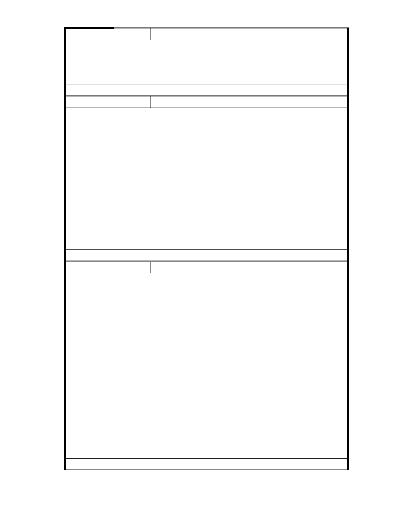

編
號 53
陳情人 市長信箱（ MA201011300107 ）
請市政府近數通過慈濟內湖開發申請案早日開發完成給台北市民依個深
陳情理由
具環保人文之處所
建議辦法
市 府 說 明 相關陳情意見將納入本案審查人民意見，依法定程序辦理。
委 員 會 決 議 同編號 1。
編
號 54
陳情人 市長信箱（ MA201011300150 ）
基隆河大彎北段都市計畫法案於 97 年 1 月公開展覽,依正常程序應 2~3
月可公告實施,無奈至今已近 3 年,法案仍無法通過,讓百姓對市政效率懷
陳 情 理 由 疑,而內湖區成功路 5 段保護區變更案,環保團體及市民反對聲浪強烈但
市府反而積極辦理想讓變更案通過,也讓人覺得市府以選擇性辦案,令人
質疑,請市長明鑑！
建議辦法
市府說明
一、本案申請範圍於慈濟購得前已遭非法填土，實不具保護區之功能，
今申請單位欲興辦社會福利事業，故依法辦理都市計畫變程序；目
前申請方案較先前方案已大幅降低開發強度、調整使用項目並承諾
大面積滯洪設施等回饋事項，顯示申請單位欲改善現況之誠意。
二、相關陳情意見將納入本案審查人民意見，依法定程序辦理。
三、後續審理程序將要求申請人加強與在地區民、社會大眾，就基地現
況、規劃方案及環境助益作為等方面加強溝通。
委 員 會 決 議 同編號 1。
編
號 55
陳情人 市長信箱（ MA201011300217 ）
台北市政府您好，我是關心內湖的一個小市民
首先感謝政府相關人員撥空閱讀此信。我是一位在內湖出生、長大的小
市民，今年二十四歲，目前就讀研究所。從小內湖在我印象當中一直是
有好山好水，令人稱羨的一塊樂土；然而眼前卻有一件開發案令人著急。
慈濟是個規模很龐大、行善不遺餘力的社團，我也不曾質疑為了發展這
樣一個大型的機構必須要有相當規模的硬體設備支援。然而，慈濟內湖
基地的開發案，嘗試將保護區更改地目使用，著實令我不解。到底是怎
樣的原因，令這樣一個大型社團機構，一定要在這片保護區大興土木，
陳 情 理 由 不能另外找尋好地點。是否背後有牽連到其他利益糾葛，或者與某些建
商打算對內湖的開發有關？這件保護區開發案，預期將會成為一個標
的、範本，牽連往後的開發案件，不管對內湖、台北，或台灣的發展都
會有長遠的影響。身為一個愛內湖區的小市民，在我完成學業之後想待
在內湖工作，更想在內湖成家立業，實在不願意看到內湖的好環境被特
定團體所支配，或者破壞。在此懇請台北市政府相關人員堅定立場，屏
除慈濟內湖基地開發案（「變更臺北市內湖區成功路五段大湖公園北側部
分保護區為社會福利特定專用區主要計畫案」），為我們這些小市民保住
這片家園。非常感謝！
建議辦法
- 49 -